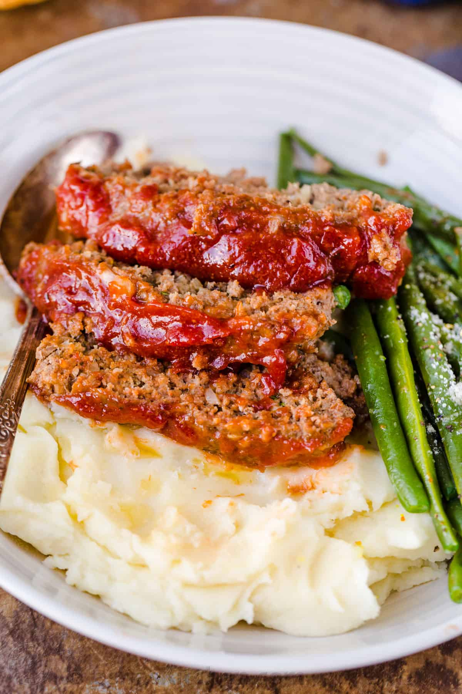

Meatloaf
Description
This is a dish that the whole family will love. An easy meatloaf that will make lots of extra for leftovers!
Ingredients
- 2 lbs ground beef, 85% or 90% lean
- 1 med onion, finely chopped
- 2 large eggs
- 3 garlic clovees
- 3 tbsp ketchup
- 1 cup panko breadcrumbs
- 1/3 cup milk
- 1.5 tsp salt
Steps
- Line a 9”x5” loaf pan with parchment paper and preheat oven to 375°F.
- In a large bowl, add all of the ingredients for the meatloaf. Mix well to combine.
- Add meat to the loaf pan, gently press meat down and shape evenly and bake meatloaf at 375˚F for 40 minutes.